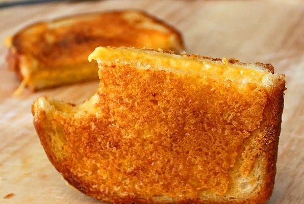

Grilled Cheese Sandwich

Description
In my humble opinion, this crispy, crunchy, cheesy masterpiece is the
ultimate grilled cheese sandwich. Make sure you follow some basic rules
for this to work properly. Only use airy, nutritionally insignificant
white bread. Use a nice sharp cheddar and be sure to use a quality
non-stick pan over medium to medium-low heat.
Ingredients
- 2 tablespoons butter, divided
- 2 slices white bread
- ½ cup shredded extra sharp Cheddar cheese, divided
Directions
-
Melt 1 1/2 tablespoons butter in a nonstick skillet over medium-low
heat. Place bread slices in the skillet on top of the melted butter.
-
Spread about 1/4 cup Cheddar cheese on one slice of bread; place the
other slice of bread, butter-side up, on top of the cheese. Spread about
2 tablespoons of cheese on top of the sandwich.
-
Melt remaining 1/2 tablespoon butter in the skillet next to the
sandwich. Flip the sandwich onto the melted butter so that the
cheese-side is facing down. Spread remaining cheese on top of the
sandwich. Cook sandwich until cheese on the bottom is crispy and
caramelized, 3 to 4 minutes. Flip sandwich and cook until cheese is
crispy and caramelized on the other side, another 3 to 4 minutes.